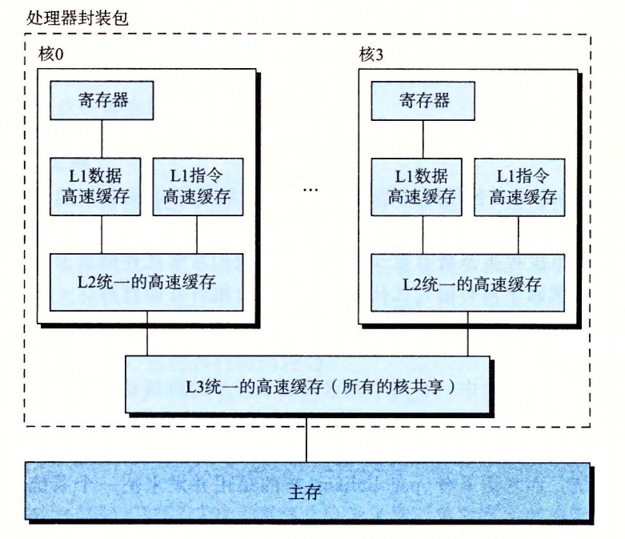

1.9 重要主题
在此，小结一下我们旋风式的系统漫游。这次讨论得出一个很重要的观点，那就是系统不仅仅只是硬件。系统是硬件和系统软件互相交织的集合体，它们必须共同协作以达到运行应用程序的最终目的。本书的余下部分会讲述硬件和软件的详细内容，通过了解这些详细内容，你可以写出更快速、更可靠和更安全的程序。
作为本章的结束，我们在此强调几个贯穿计算机系统所有方面的重要概念。我们会在本书中的多处讨论这些概念的重要性。
1.9.1 Amdahl 定律
Gene Amdahl，计算领域的早期先锋之一，对提升系统某一部分性能所带来的效果做出了简单却有见地的观察。这个观察被称为 Amdahl 定律（Amdahl's law）。该定律的主要思想是，当我们对系统的某个部分加速时，其对系统整体性能的影响取决于该部分的重要性和加速程度。若系统执行某应用程序需要时间为$$T{old}$$ 。假设系统某部分所需执行时间与该时间的比例为 $$\alpha$$ ，而该部分性能提升比例为 $$k$$ 。即该部分初始所需时间为 $$\alpha T{old}$$ ，现在所需时间为 $$(\alpha T_{old}) / k$$ 。因此，总的执行时间应为
$$ T{new} = (1-\alpha)T{old}+(\alpha T{old})/k=T{old}[(1-\alpha)+\alpha/k]
$$
由此，可以计算加速比 $$S=T{old}/T{new}$$ 为
$$ S=\frac{1}{(1-\alpha)+\alpha / k} \tag{1.1}
$$
举个例子，考虑这样一种情况，系统的某个部分初始耗时比例为 60%（α =0.6），其加速比例因子为 3（k=3）。则我们可以获得的加速比为 1/[0.4+0.6/3]=1.67 倍。虽然我们对系统的一个主要部分做出了重大改进，但是获得的系统加速比却明显小于这部分的加速比。这就是 Amdahl 定律的主要观点——要想显著加速整个系统，必须提升全系统中相当大的部分的速度。
旁注 - 表示相对性能
性能提升最好的表示方法就是用比例的形式 $$T{old}/T{new}$$，其中，$$T{old}$$ 为原始系统所需时间， $$T{new}$$ 为修改后的系统所需时间。如果有所改进，则比值应大于 1。我们用后缀 “×” 来表示比例，因此，“2.2×” 读作 “2.2 倍”。
表示相对变化更传统的方法是用百分比，这种方法适用于变化小的情况，但其定义是模糊的。应该等于 $$100 \cdot (T{old}-T{new})/T{new}$$ ，还是 $$100 \cdot (T{old}-T{new})/T{old}$$，还是其他的值？此外，它对较大的变化也没有太大意义。与简单地说性能提升 2.2× 相比，“性能提升了 120%” 更难理解。
练习题 1.1
假设你是个卡车司机，要将土豆从爱达荷州的 Boise 运送到明尼苏达州的 Minneapolis，全程 2500 公里。在限速范围内，你估计平均速度为 100 公里/小时，整个行程需要 25 个小时。
A. 你听到新闻说蒙大拿州刚刚取消了限速，这使得行程中有 1500 公里卡车的速度可以为 150 公里/小时。那么这对整个行程的加速比是多少？
B. 你可以在 www.fasttrucks.com 网站上为自已的卡车买个新的涡轮增压器。网站现货供应各种型号，不过速度越快，价格越高。如果想要让整个行程的加速比为 1.67×，那么你必须以多快的速度通过蒙大拿州？
该问题说明 Amdahl 定律不仅仅适用于计算机系统。
A. 根据公式 1.1，有 α=0.6，k=1.5。更直接地说，在蒙大拿行驶的 1500 公里需要10个小时，而其他行程也需要 10 个小时。则加速比为 25/(10＋10)=1.25×。
B. 根据公式 1.1，有 α=0.6，要求 S=1.67，则可算出 k。更直接地说，要使行程加速度达到 1.67×，我们必须把全程时间减少到 15 个小时。蒙大拿以外仍要求为 10 小时，因此，通过蒙大拿的时间就为 5 个小时。这就要求行驶速度为 300 公里/小时，对卡车来说这个速度太快了！
练习题 1.2
公司的市场部向你的客户承诺，下一个版本的软件性能将改进 2×。这项任务被分配给你。你已经确认只有 80% 的系统能够被改进，那么，这部分需要被改进多少（即 k 取何值）才能达到整体性能目标？
理解 Amdahl 定律最好的方法就是解决一些实例。本题要求你从特殊的角度来看公式 1.1。
本题是公式的简单应用。已知 S=2，α=0.8，则计算 k：
$$ \begin{align} 2 & = \frac{1}{(1-0.8)+0.8/k}\ 0.4+1.6/k & = 1.0\ k & = 2.67 \end{align}
$$
Amdahl 定律一个有趣的特殊情况是考虑 k 趋向于 ∞ 时的效果。这就意味着，我们可以取系统的某一部分将其加速到一个点，在这个点上，这部分花费的时间可以忽略不计。于是我们得到
$$ S_{\infty}=\frac{1}{(1-\alpha)} \tag{1.2}
$$
举个例子，如果 60% 的系统能够加速到不花时间的程度，我们获得的净加速比将仍只有 1/0.4=2.5×。
Amdahl 定律描述了改善任何过程的一般原则。除了可以用在加速计算机系统方面之外，它还可以用在公司试图降低刀片制造成本，或学生想要提高自己的绩点平均值等方面。也许它在计算机世界里是最有意义的，在这里我们常常把性能提升 2 倍或更高的比例因子。这么高的比例因子只有通过优化系统的大部分组件才能获得。
1.9.2 并发和并行
数字计算机的整个历史中，有两个需求是驱动进步的持续动力：一个是我们想要计算机做得更多，另一个是我们想要计算机运行得更快。当处理器能够同时做更多的事情时，这两个因素都会改进。我们用的术语并发（concurrency）是一个通用的概念，指一个同时具有多个活动的系统；而术语并行（parallelism）指的是用并发来使一个系统运行得更快。并行可以在计算机系统的多个抽象层次上运用。在此，我们按照系统层次结构中由高到低的顺序重点强调三个层次。
1. 线程级并发
构建在进程这个抽象之上，我们能够设计出同时有多个程序执行的系统，这就导致了并发。使用线程，我们甚至能够在一个进程中执行多个控制流。自 20 世纪 60 年代初期出现时间共享以来，计算机系统中就开始有了对并发执行的支持。传统意义上，这种并发执行只是模拟出来的，是通过使一台计算机在它正在执行的进程间快速切换来实现的，就好像一个杂耍艺人保持多个球在空中飞舞一样。这种并发形式允许多个用户同时与系统交互，例如，当许多人想要从一个 Web 服务器获取页面时。它还允许一个用户同时从事多个任务，例如，在一个窗口中开启 Web 浏览器，在另一窗口中运行字处理器，同时又播放音乐。在以前，即使处理器必须在多个任务间切换，大多数实际的计算也都是由一个处理器来完成的。这种配置称为单处理器系统。
当构建一个由单操作系统内核控制的多处理器组成的系统时，我们就得到了一个多处理器系统。其实从 20 世纪 80 年代开始，在大规模的计算中就有了这种系统，但是直到最近，随着多核处理器和超线程（hyperthreading）的出现，这种系统才变得常见。图 1-16 给出了这些不同处理器类型的分类。

多核处理器是将多个 CPU（称为“核”）集成到一个集成电路芯片上。图 1-17 描述的是一个典型多核处理器的组织结构，其中微处理器芯片有 4 个 CPU 核，每个核都有自己的 L1 和 L2 高速缓存，其中的 L1 高速缓存分为两个部分——一个保存最近取到的指令，另一个存放数据。这些核共享更高层次的高速缓存，以及到主存的接口。工业界的专家预言他们能够将几十个、最终会是上百个核做到一个芯片上。

超线程，有时称为同时多线程（simultaneous multi-threading），是一项允许一个 CPU 执行多个控制流的技术。它涉及 CPU 某些硬件有多个备份，比如程序计数器和寄存器文件，而其他的硬件部分只有一份，比如执行浮点算术运算的单元。常规的处理器需要大约 20000 个时钟周期做不同线程间的转换，而超线程的处理器可以在单个周期的基础上决定要执行哪一个线程。这使得 CPU 能够更好地利用它的处理资源。比如，假设一个线程必须等到某些数据被装载到高速缓存中，那 CPU 就可以继续去执行另一个线程。举例来说，Intel Core i7 处理器可以让每个核执行两个线程，所以一个 4 核的系统实际上可以并行地执行 8 个线程。
多处理器的使用可以从两方面提高系统性能。首先，它减少了在执行多个任务时模拟并发的需要。正如前面提到的，即使是只有一个用户使用的个人计算机也需要并发地执行多个活动。其次，它可以使应用程序运行得更快，当然，这必须要求程序是以多线程方式来书写的，这些线程可以并行地高效执行。因此，虽然并发原理的形成和研究已经超过 50 年的时间了，但是多核和超线程系统的出现才极大地激发了一种愿望，即找到书写应用程序的方法利用硬件开发线程级并行性。第 12 章会更深入地探讨并发，以及使用并发来提供处理器资源的共享，使程序的执行允许有更多的并行。
2. 指令级并行
在较低的抽象层次上，现代处理器可以同时执行多条指令的属性称为指令级并行。早期的微处理器，如 1978 年的 Intel 8086，需要多个（通常是 3～10 个）时钟周期来执行一条指令。最近的处理器可以保持每个时钟周期 2～4 条指令的执行速率。其实每条指令从开始到结束需要长得多的时间，大约 20 个或者更多周期，但是处理器使用了非常多的聪明技巧来同时处理多达 100 条指令。在第 4 章中，我们会研究流水线（pipelining）的使用。在流水线中，将执行一条指令所需要的活动划分成不同的步骤，将处理器的硬件组织成一系列的阶段，每个阶段执行一个步骤。这些阶段可以并行地操作，用来处理不同指令的不同部分。我们会看到一个相当简单的硬件设计，它能够达到接近于一个时钟周期一条指令的执行速率。
如果处理器可以达到比一个周期一条指令更快的执行速率，就称之为超标量（super-scalar）处理器。大多数现代处理器都支持超标量操作。第 5 章中，我们将描述超标量处理器的高级模型。应用程序员可以用这个模型来理解程序的性能。然后，他们就能写出拥有更高程度的指令级并行性的程序代码，因而也运行得更快。
3. 单指令、多数据并行
在最低层次上，许多现代处理器拥有特殊的硬件，允许一条指令产生多个可以并行执行的操作，这种方式称为单指令、多数据，即 SIMD 并行。例如，较新几代的 Intel 和 AMD 处理器都具有并行地对 8 对单精度浮点数（C 数据类型 float）做加法的指令。
提供这些 SIMD 指令多是为了提高处理影像、声音和视频数据应用的执行速度。虽然有些编译器会试图从 C 程序中自动抽取 SIMD 并行性，但是更可靠的方法是用编译器支持的特殊的向量数据类型来写程序，比如 GCC 就支持向量数据类型。作为对第 5 章中比较通用的程序优化描述的补充，我们在网络旁注 OPT：SIMD 中描述了这种编程方式。
1.9.3 计算机系统中抽象的重要性
抽象的使用是计算机科学中最为重要的概念之一。例如，为一组函数规定一个简单的应用程序接口（API）就是一个很好的编程习惯，程序员无须了解它内部的工作便可以使用这些代码。不同的编程语言提供不同形式和等级的抽象支持，例如 Java 类的声明和C语言的函数原型。
我们已经介绍了计算机系统中使用的几个抽象，如图 1-18 所示。在处理器里，指令集架构提供了对实际处理器硬件的抽象。使用这个抽象，机器代码程序表现得就好像运行在一个一次只执行一条指令的处理器上。底层的硬件远比抽象描述的要复杂精细，它并行地执行多条指令，但又总是与那个简单有序的模型保持一致。只要执行模型一样，不同的处理器实现也能执行同样的机器代码，而又提供不同的开销和性能。

图 1-18 计算机系统提供的一些抽象。计算机系统中的一个重大主题就是提供不同层次的抽象表示，来隐藏实际实现的复杂性
在学习操作系统时，我们介绍了三个抽象：文件是对 I/O 设备的抽象，虚拟内存是对程序存储器的抽象，而进程是对一个正在运行的程序的抽象。我们再增加一个新的抽象∶ 虚拟机，它提供对整个计算机的抽象，包括操作系统、处理器和程序。虚拟机的思想是 IBM 在 20 世纪 60 年代提出来的，但是最近才显示出其管理计算机方式上的优势，因为一些计算机必须能够运行为不同的操作系统（例如，Microsoft Windows、MacOS 和 Linux）或同一操作系统的不同版本设计的程序。
在本书后续的章节中，我们会具体介绍这些抽象。